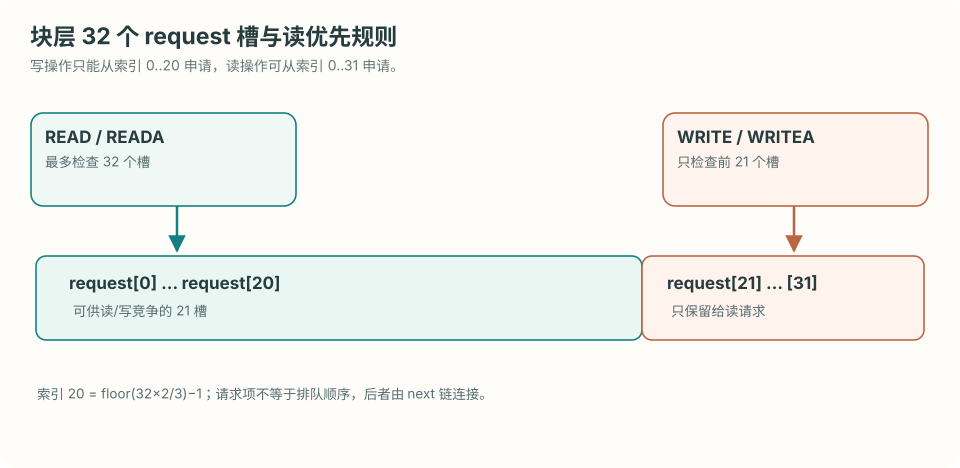
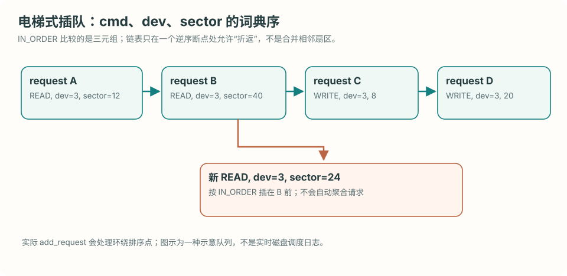

块设备请求队列：读优先、电梯排序与 1KiB 到 512B
深入 ll_rw_block、make_request、add_request、IN_ORDER 和 end_request，解释为什么读请求预留槽位以及为什么早期电梯算法不等于请求合并。
NR_REQUEST=32 · elevator · blk把一块磁盘数据交给硬件，究竟需要什么？
文件系统的 bread(dev,block) 使用 1KiB 缓冲块，而传统硬盘控制器一次处理 512B 扇区。块层需要把缓存中的设备号、块号和目标地址组织成一个请求，决定请求排队次序，再将请求交给硬盘、软盘或 RAM 磁盘驱动的 request_fn。
Linux 0.11 的块请求是固定的 32 个静态槽位，不是现代块多队列或 I/O 调度框架。读请求与写请求的压力不同；版本源码通过“写请求只许使用前 2/3 槽位”保证读请求还有预留空间。

struct request 与 blk_dev_struct 的不同职责
kernel/blk_drv/blk.h 定义 NR_REQUEST=32。每个 request 保存 dev、cmd、errors、sector、nr_sectors、buffer、waiting、bh 和 next。其中 dev=-1 表示槽位空闲；next 把同设备的活动请求连成链。
blk_dev_struct 则是每种主设备号的入口：request_fn 决定由谁执行，current_request 指向该设备队列头。静态 blk_dev[NR_BLK_DEV] 按主设备号索引，NR_BLK_DEV=7。设备驱动调用 blk_dev[MAJOR_NR].request_fn=DEVICE_REQUEST 注册自己的处理器，硬盘的主设备号是 3。
#define NR_REQUEST 32
struct request {
int dev,cmd,errors;
unsigned long sector,nr_sectors;
char *buffer;
struct task_struct *waiting;
struct buffer_head *bh;
struct request *next;
};
struct blk_dev_struct {
void (*request_fn)(void);
struct request *current_request;
};为什么不能把 request 数组顺序直接当 I/O 队列顺序？（展开核对）
request[32] 是静态槽池；请求按 next 指针连接成设备的排序链表。槽位索引用于资源分配，next 顺序用于该设备排队。
一个 buffer_head 怎样形成两个扇区的 request
ll_rw_blk.c 的 ll_rw_block(rw,bh) 先通过 MAJOR(bh->b_dev) 检查设备处理器，再调用 make_request(major,rw,bh)。普通 READ/WRITE 会等待并锁住 buffer，然后跳过“READ 时缓冲已 uptodate”或“WRITE 时缓冲不脏”的无必要 I/O。
真正发出请求时使用如下固定转换：
req->sector = bh->b_blocknr<<1;
req->nr_sectors = 2;
req->buffer = bh->b_data;原因是 BLOCK_SIZE=1024 而扇区大小 512B，一个块对应两个连续扇区。sector 是分区内的扇区偏移，硬盘驱动随后再加上 hd[minor].start_sect，不能在这一层直接给出 CHS 柱面地址。
block_number = 137
sector_start = block_number << 1
nr_sectors = 2
print(sector_start, nr_sectors) # 274, 2这只是地址单位换算，并不声称硬盘上逻辑块 137 的内容是什么。
为什么读可以用全部 32 槽，写只有 21 槽
make_request 在分配请求时，把读的搜索起点设为 request+NR_REQUEST，写的起点设为 request+(NR_REQUEST*2)/3，随后用 while (--req >= request) 反向寻找 dev<0 的空槽。对于 32 个槽位，(32*2)/3 在整数运算中等于 21，写只能使用索引 0–20，读可使用 0–31。
没有槽位时，普通请求在 wait_for_request 上睡眠，然后重试；READA/WRITEA 是可以丢弃的预读/预写提示——缓冲区忙或队列满时可能直接放弃，不应把它们描述为“必须完成的读取”。
if (rw == READ)
req = request + NR_REQUEST;
else
req = request + ((NR_REQUEST*2)/3);
while (--req >= request)
if (req->dev < 0)
break;一次很多写入把 0–20 槽占满时，读请求还剩哪些专用槽？（展开核对）
索引 21–31，共 11 槽仍保留给读。实际读请求也可以与写竞争 0–20 的槽，因此“读拥有专用 11 槽”不等于“所有读都只放高位槽”。
IN_ORDER 实际比较 cmd、dev、sector
blk.h 的 IN_ORDER(s1,s2) 先按 cmd（READ=0、WRITE=1），再按设备号、最后才按扇区位置比较。add_request 则使用 IN_ORDER(tmp,req)、IN_ORDER(tmp,tmp->next) 等条件在队列中寻找插入点，允许环状顺序的一个回绕位置。这就是本版的简单电梯式插入。

#define IN_ORDER(s1,s2) \
((s1)->cmd < (s2)->cmd || \
((s1)->cmd == (s2)->cmd && \
((s1)->dev < (s2)->dev || \
((s1)->dev == (s2)->dev && \
(s1)->sector < (s2)->sector))))旧文构造了一个通过 tmp->sector + nr_sectors == req->sector 自动合并相邻请求的功能；**0.11 的这段 add_request 并不进行该合并**。如果把真实的简单排序误讲成磁盘调度的合并优化，读者会对 I/O 次数得出不成立的结论。
空队列立即调用设备处理器，非空则只是插入
add_request 在禁中断保护下给 req 置 next=NULL。若某设备的 current_request 为空，将 req 设为队列头、恢复中断，并调用 (dev->request_fn)() 开始处理；若已有请求，则按 IN_ORDER 插进链表，恢复中断之后返回。这时不直接再启动一遍同设备硬件。
一旦底层硬盘/软盘处理完成，驱动的 end_request 宏负责更新 buffer 有效/锁状态、唤醒等待者、释放槽位并从链表移到后继项；设备处理器才继续发下一个请求。
块层和每个硬件驱动的分工边界
块层只负责提供共用队列和分派，并不知道硬盘的 CHS、软盘的马达延迟，或者 RAM 磁盘的内存复制。驱动在注册 request_fn 之后，读取 CURRENT 请求头，对相应设备执行硬件操作或内存复制。这个抽象让文件系统 bread 不必为三种设备实现三份不兼容的用户接口。
但它仍是非常早期的统一接口：没有现代 bio、多队列 blk-mq、CPU 亲和性或硬件队列深度优化。因此不能从这里推广当前 Linux 的 I/O 调度器选项与性能指标。
用三个源文件验证规则，而不是背名词
grep -n 'NR_REQUEST\|IN_ORDER\|struct request' kernel/blk_drv/blk.h
grep -n 'make_request\|add_request\|ll_rw_block\|nr_sectors' kernel/blk_drv/ll_rw_blk.c
grep -n 'end_request\|CURRENT\|MAJOR_NR' kernel/blk_drv/blk.h
grep -n 'request_fn\|do_hd_request' kernel/blk_drv/hd.c应能找到读写槽位差异、请求数组与链表的分工、主设备号驱动分派。它不等于已经跑过真实磁盘基准，也无法在没有镜像和 QEMU 设置的情况下得出磁盘响应时间。
精确出处与下一章
- kernel/blk_drv/ll_rw_blk.c：make_request、add_request、ll_rw_block。
- kernel/blk_drv/blk.h：NR_REQUEST、IN_ORDER、end_request 宏。
- fs/buffer.c：发出 READ/WRITE 的上层 bread/sys_sync。
- kernel/blk_drv/hd.c：硬盘 request_fn 的注册与底层实现。
当队列第一个请求交给硬盘后，控制器怎样接收“读哪个柱面、磁头、扇区”的命令？一个 IRQ 又如何驱动 512B 数据进入缓存？下一章直接跟踪这些硬件时序。